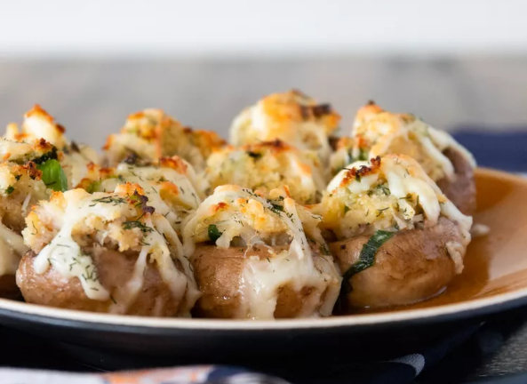

Perfect Crab-Stuffed Mushrooms

Description
These little goodies are the perfect addition to your next holiday gathering or even the perfect appetizer to serve
before a cozy dinner at home. Everyone will be dazzled by every delicious bite (they won't be able to keep their hands off of them!)
You can smile while you think of how easy they were to toss together! And the best part - I usually end up with leftover stuffing
which freezes beautifully until the next carry-in!
Ingredients
- 2 tablespoons butter
- 2 tablespoons minced green onion
- 1 cup cooked crabmeat, finely chopped
- ½ cup dry bread crumbs
- ¼ cup shredded Monterey Jack cheese
- 1 egg, beaten
- 1 teaspoon lemon juice
- ½ teaspoon dried dill weed
- ½ cup butter, melted
- 1 ½ pounds fresh button mushrooms, stems removed
- ½ cup shredded Monterey Jack cheese
- ¼ cup dry white wine
Steps
- Preheat the oven to 400 degrees F (200 degrees C). Line a baking sheet with aluminum foil.
- Using a paring knife, cut each date lengthwise through to the middle. Combine goat cheese and rosemary
in a bowl
until evenly mixed. Stuff each date with the goat cheese mixture. Wrap each date with a small piece
of bacon and secure
with a toothpick. Place on prepared baking sheet.
- Bake in the preheated oven for 15 minutes.
- Turn on the broiler and place baking sheet 6 inches from heat. Broil until bacon is browned and slightly crispy, 1 to 2 minutes.
Remove from oven and place on a serving platter; drizzle dates with hot honey.